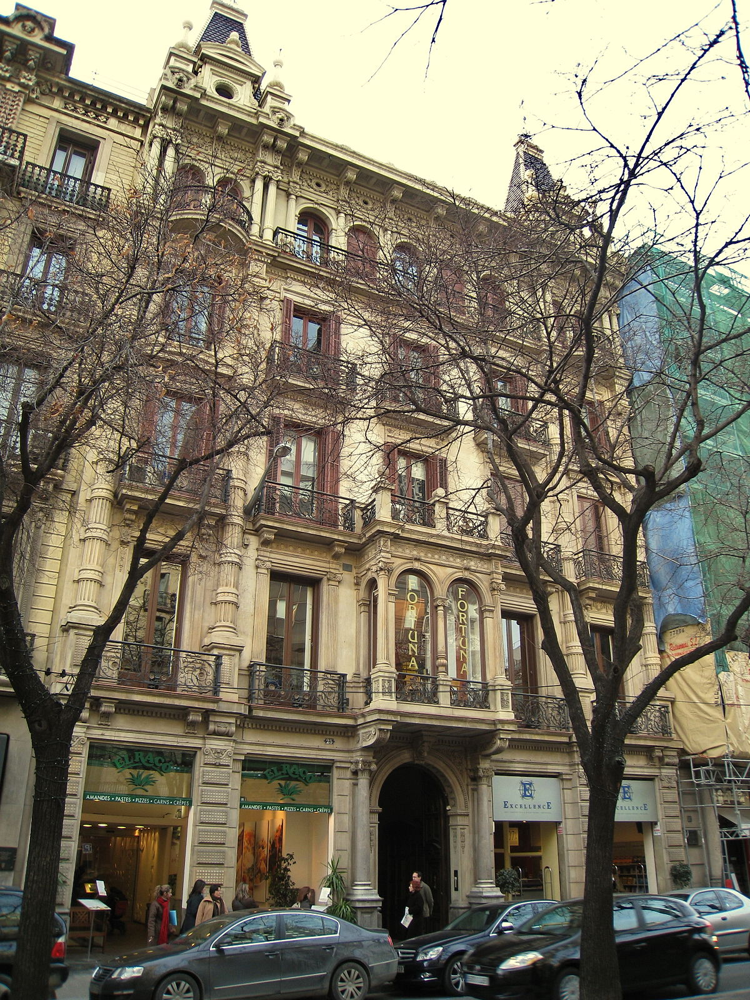
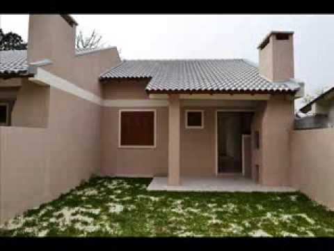
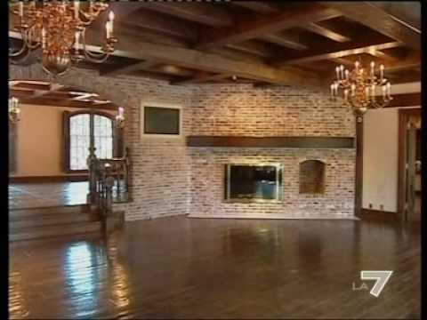

Casa Trappold, Apold | 70 evaluări de la oaspeți | Booking.com
2020.09.21 19:06
Direct la pagina principală Kč
Se încarcă
Alegeți limba preferată. Vorbim română și alte 43 limbi.
Cele mai folosite limbi în Republica Cehă
Čeština English (UK) English (US) Русский Slovenčina DeutschToate limbile
English (UK) English (US) Deutsch Nederlands Français Español Español (AR) Español (MX) Català Italiano Português (PT) Português (BR) Norsk Suomi Svenska Dansk Čeština Magyar Română 日本語 简体中文 繁體中文 Polski Ελληνικά Русский Türkçe Български العربية 한국어 עברית Latviski Українська Bahasa Indonesia Bahasa Malaysia ภาษาไทย Eesti Hrvatski Lietuvių Slovenčina Srpski Slovenščina Tiếng Việt Filipino Íslenska Înregistrați-vă proprietatea Înregistrați-vă Autentificare Sejururi Zboruri Închirieri de maşini Atracţii Taxiuri de la/la aeroport Asistență legată de coronavirus (COVID-19)Vă rugăm să verificați restricțiile de călătorie. Este posibil ca deplasările să fie permise numai în anumite scopuri și în special, este posibil ca cele în scop turistic să nu fie permise.
Citiți mai mult
Pagina principală Toate hanurile Hanuri Apartamente România Hanuri Hoteluri Mureş Hanuri Hoteluri Apold Hanuri HoteluriOferte la Casa Trappold (Han), Apold (România)
Informații și prețuri: Facilităţi Informații importante Evaluările oaspeților (70)Han Casa Trappold
Casa TrappoldPrincipală, 75, 547040 Apold, România – Locaţie excelentă - arată harta
Locație excelentă — cotată 9,1/10! (scor din 70 comentarii)
Evaluată de clienți după sejurul lor la Casa Trappold.
9,4 Superb 70 evaluăriFacilităţi
9,5
Curățenie
9,6
Confort
9,4
Raport calitate/preţ
9,1
Locaţie
9,1
Total
9,4
WiFi gratuit
7,5
Locul de joaca pentru copii si curatenia au fost punctele forte. Mancarea foarte buna, doar ca o recomandare, poate cina s-ar putea lua in intervalul 19:00-21:00. La ora 20:00, copilul deja nu mai avea rabdare, de foame😊. La fel si micul dejun, intre 07:00 si 09:00, din aceleasi considerente de mai sus.
Ramona RomâniaPat confortabil, camera frumoasa si curata, mic dejun delicios, personal amabil
Iulian RomâniaFoarte faina locația, nu într-un sat mai celebru, dar poate ca asta e spre bine. Casa Trappold are spațiu suficient să-ți permiți distanțare socială, ca să nu mai zic de spatiile de joacă pentru copii, de ciubar.. Masa excelentă, mâncare făcută în casă minunată.
Laur RomâniaAm avut parte de un concediu minunat la Casa Trappold. Da, este o proprietate care are toate facilitatile pentru petrecerea timpului liber in mijlocul naturii iar frumusetea imprejurimilor iti taie respiratia. Insa cred ca ceea ce ii face pe oaspeti sa revina este caldura cu care sunt primiti. Fiecare persoana cu care am interactionat a avut grija sa nu ne lipseasca nimic. Am apreciat foarte mult faptul ca ne-au pregatit si masa de pranz, la cerere, cu toate ca in mod normal ofera doar micul dejun si cina. Calatorind cu baietelul nostru de 3 ani, ne-a fost de mare ajutor sa nu fim nevoiti sa mergem la Sighisoara zi de zi pentru pranz. In plus, mancarea a fost excelenta, in special micul dejun si nelipsitul lichiu. E un loc ideal pentru familii. Foarte curat, cu spatii amenajate inteligent si serviciu impecabil. Localizarea e de asemenea excelenta, fiind un punct de ponire catre majoritatea satelor sasesti din patrimoniul Unesco si nu numai.
Anamaria GreciaLocația este super, mult mai mare decât ne imaginam. Gazdele extraordinare, fam. Mureșan și nu în ultimul rând Paul care are grijă de toată lumea
Radu Românialocatia foarte placuta, o oaza de relaxare . personalul extrem de agreabil si mancarea foarte buna si din belsug. preturi rezonabile!
Corina MexicTotul la superlativ si mult peste orice asteptare! Am petrecut niste zile deosebite in acest colt de rai! Mancarea este absolut delicioasa iar atentia la detalii, gazdele, atmosfera, designul interior, confortul sunt servicii de nota 100. Abia asteptam sa revenim!
Camelia RomâniaO locatie excelenta pentru cine vrea sa faca plimbari la bisericile fortificate sau sa se plimbe pur si simplu cu bicicleta sau cu ATV-ul ( Casa Trappold ofera ambele oportunitati) Micul dejun exceptinal, mancarea gatita ca la mama acasa, de exceptie. Curatenie, personal prietenos, gazda - o adevarata gazda ca in poveste. Exista si ciubar cu apa sarata si sauna, si o sufragerie cu semineu, si un loc de facut focul de tabara, si un loc de joaca pentru copii. Liniste si aer curat. Minunat.
Cerevelu RomâniaMâncare de casă delicioasă și gazde foarte primitoare
Roxana RomâniaO proprietate făcută cu mult gust, care îți da o stare de bine deosebita.
Ion RomâniaPersonal
9,8 +45 fotografii Închide × Casa Trappold Rezervaţi acumGarantați-vă un preț excelent la Casa Trappold - proprietate evaluată cu 9,4 de clienții recenți.
Introduceți perioada și începeți.
Casa Trappold
9,4 Superb 70 evaluări 9,8Personal
Ce au preferat clienții: „Locul de joaca pentru copii si curatenia au fost punctele forte. Mancarea foarte buna, doar ca o recomandare, poate cina s-ar putea lua in intervalul 19:00-21:00.” Ramona România „Pat confortabil, camera frumoasa si curata, mic dejun delicios, personal amabil” Iulian România „Foarte faina locația, nu într-un sat mai celebru, dar poate ca asta e spre bine.” Laur România „Am avut parte de un concediu minunat la Casa Trappold. Da, este o proprietate care are toate facilitatile pentru petrecerea timpului liber in mijlocul naturii iar frumusetea imprejurimilor iti taie...” Anamaria Grecia „Locația este super, mult mai mare decât ne imaginam. Gazdele extraordinare, fam. Mureșan și nu în ultimul rând Paul care are grijă de toată lumea” Radu România „locatia foarte placuta, o oaza de relaxare . personalul extrem de agreabil si mancarea foarte buna si din belsug. preturi rezonabile!” Corina Mexic „Totul la superlativ si mult peste orice asteptare! Am petrecut niste zile deosebite in acest colt de rai!” Camelia România „O locatie excelenta pentru cine vrea sa faca plimbari la bisericile fortificate sau sa se plimbe pur si simplu cu bicicleta sau cu ATV-ul ( Casa Trappold ofera ambele oportunitati) Micul dejun...” Cerevelu România „Mâncare de casă delicioasă și gazde foarte primitoare” Roxana România „O proprietate făcută cu mult gust, care îți da o stare de bine deosebita.” Ion RomâniaCasa Trappold se află în Apold și are un restaurant, un bar, un lounge comun și o grădină. Facilitățile oferite de proprietate includ o recepție deschisă nonstop, o bucătărie comună și WiFi gratuit în toate zonele sale. Proprietatea pune la dispoziție parcare privată gratuită și un serviciu de închirieri de biciclete pentru oaspeții care doresc să exploreze zona înconjurătoare.
Toate camerele hanului au TV cu ecran plat cu canale prin cablu, o bucătărie și o zonă de luat masa. Toate camerele de la Casa Trappold includ o zonă de relaxare.
Proprietatea servește un mic dejun tip bufet în fiecare dimineață.
Casa Trappold oferă un loc de joacă pentru copii. Oaspeții pot juca tenis de masă la han, iar zona este potrivită pentru ciclism.
Sighișoara se află la 16 km de Casa Trappold. Cel mai apropiat aeroport este Aeroportul Târgu Mureș, situat la 74 km de proprietate.
Cuplurile apreciază în mod deosebit această locaţie. I-au dat scorul 9,4 pentru un sejur pentru 2 persoane.
Vorbim limba dumneavoastră!
Casa Trappold a întâmpinat clienții Booking.com începând cu 23 aug 2018
Cele mai apreciate facilități
barIdeale pentru cupluri – acestea au evaluat facilitățile cu 9,4 pentru un sejur pentru 2 persoane.
Oaspeții apreciază...
낍 Locație de top: evaluată la superlativ de clienții recenți (9,1)
Info mic dejun
bufet
Cafea perfectă !
뀄 WiFi gratuit
끸 Parcare privată gratuită disponibilă la locație
Rezervaţi acum Salvaţipentru a reţine să rezervaţi
Salvat în 394 liste
Profitați acum de acest preț excelent pentru sejurul următorPrimiți confirmare imediată cu anulare GRATUITĂ la majoritatea proprietăților de pe website-ul nostru!
Găsiți o politică de anulare care vi se potriveșteÎncepând cu 6 aprilie 2020 se va aplica politica de anulare pe care ați ales-o, indiferent de circumstanțele legate de coronavirus. Vă recomandăm să rezervați o opțiune cu anulare gratuită în cazul în care va trebui să vă modificați planurile de călătorie.
Citiți mai multVă rugăm să consultați condițiile de rezervare
Pentru rezervările efectuate pe sau după 6 aprilie 2020, vă sfătuim să aveți în vedere riscul asociat coronavirusului (COVID-19) și măsurile luate de guvern în această privință. Dacă nu alegeți un tarif flexibil, este posibil să nu aveți dreptul la rambursarea sumei. Solicitarea de anulare va fi gestionată de proprietate pe baza policii alese și a legii pentru protecția consumatorului, dacă se aplică. În această perioadă incertă, vă recomandăm să rezervați o opțiune cu anulare gratuită. Dacă planurile dvs. se schimbă, veți putea anula gratuit până la expirarea perioadei de anulare gratuită.
Capacitate Tipul camerei + Nr. maxim de adulţi: 2. Nr. maxim de copii: 1 Cameră dublă 1 pat dublu mare Arată preţuri S-a produs o eroare. Vă rugăm încercați mai târziu. + Nr. maxim de adulţi: 3. Nr. maxim de copii: 1 Cameră triplă cu baie comună 3 paturi de o persoană Arată preţuri S-a produs o eroare. Vă rugăm încercați mai târziu. × 6 + Nr. maxim de adulţi: 6. Nr. maxim de copii: 1 Dormitor comun mixt cu 6 paturi 6 paturi de o persoană Arată preţuri S-a produs o eroare. Vă rugăm încercați mai târziu. + Nr. maxim de adulţi: 2. Nr. maxim de copii: 1 Cameră dublă 1 pat dublu mare Arată preţuri S-a produs o eroare. Vă rugăm încercați mai târziu. + Nr. maxim de adulţi: 2. Nr. maxim de copii: 1 Cameră dublă 1 pat dublu mare Arată preţuri S-a produs o eroare. Vă rugăm încercați mai târziu. Împrejurimile proprietății * Locația proprietății a primit scorul 9,0 pentru plimbări, din 5 comentarii ale clienților Locaţie excelentă - arată harta Vedeți disponibilitățile Ce se află în apropiere Saschiz Fortified Church 13,2 km Restaurante și cafenele Restaurant Casa Krauss 10 km Restaurant Cafe Martini & Habermann 10 km Cafenea/bar Vintage 10 km Restaurant Casa Cositorarilor 10 km Supermarketuri și magazine alimentare Supermarket Lidl 10 km Supermarket Kaufland 10 km Supermarket Penny Market 10 km Piață Piața Mare 10 km Aeroporturi în apropiere Aeroportul Transilvania Târgu Mureș 48,7 km Aeroportul Internaţional Sibiu 67,4 km * Toate distanțele sunt măsurate în linie dreaptă. Distanțele efective de călătorie pot diferi. 1 restaurant la proprietateRestaurant
Bucătărie: locală
Vedeți disponibilitățile Facilități oferite de Casa Trappold Facilităţi excelente! Scor din comentarii: 9,5
Cele mai apreciate facilități
barExterior
zonă de picnic mobilier exterior terasă la soare grătar terasă grădinăBucătărie
bucătărie comunăAnimale de companie
Animalele de companie nu sunt acceptate.
Activităţi
Evenimente sportive live (transmisiuni) Tur sau curs despre cultura locală Seri cu cină tematică Cost suplimentar Tururi cu bicicleta Cost suplimentar Tururi de mers pe jos Cost suplimentar călărie În afara locației Cost suplimentar ciclism În afara locației drumeţii În afara locației Cost suplimentar bibliotecă Închirieri biciclete (cost suplimentar) karaoke tenis de masă teren de joacă pentru copii cameră de jocuri pescuit Cost suplimentar teren de tenis În afara locațieiMâncăruri și băuturi
cafenea la proprietate ciocolată sau fursecuri fructe sticlă de apă vin/șampanie meniuri cu diete speciale (la cerere) bar restaurant Cafea fantastică !Internet
Gratuit! Internet wireless este disponibil în întregul hotel şi este gratuit.
Parcare
Gratuit! Este posibilă parcarea privată gratuit la proprietate (nu este necesară rezervare).
parcare pentru persoane cu handicap parcare pe stradă parcare păzităServicii de recepție
recepţie deschisă nonstopDivertisment și servicii pentru familii
canale TV pentru copii porți de siguranță pentru copiii mici echipament de joacă pentru exterior zonă de joacă înăuntru cărți, DVD-uri, muzică pentru copii jocuri și puzzle-uriFacilități business
săli de conferinţă şi petreceriSiguranță
Extinctoare Camere de supraveghere în afara proprietățiiGeneral
lounge/cameră cu TV comună automat (băuturi) zonă pentru fumători cameră cu facilităţi antialergice încălzire camere izolate fonic camere de familie facilităţi pentru persoane cu mobilitate redusă camere pentru nefumătoriAccesibilitate
accesibil cu scaunul cu rotileFacilități wellness
umbrele de plajă șezlonguri sau paturi de plajă Prosoape de plajă/piscină baie publică cadă cu hidromasaj/jacuzzi saună Cost suplimentarLimbi vorbite
engleză românăVedeți disponibilitățile Informații importante Casa Trappold primește cereri speciale - trimiteți la pasul următor!
Check-in
14:00 - 00:00
Check-out
00:00 - 12:00
Anulare/
plată în avans
Politicile de anulare şi de plată în avans variază în funcţie de tipul de cazare. Vă rugăm să introduceţi datele şederii dvs. şi să verificaţi condiţiile camerei cerute de dvs.
Copii şi paturi
Politici pentru copii
Copiii de orice vârstă sunt bine-veniți.
La această proprietate, copiii sunt considerați adulți începând cu vârsta de 15 ani.
Pentru a vedea informațiile corecte despre prețuri și capacitate, vă rugăm să adăugați în căutare numărul de copii care vă însoțesc și vârstele acestora.
Politici despre pătuțuri și paturi suplimentare
La această proprietate nu sunt disponibile pătuțuri și paturi suplimentare.
Nicio restricţie de vârstă
Nu există o vârstă minimă pentru check-in
Animale de companie
Animalele de companie nu sunt acceptate.
Plăți prin Booking.com
Booking.com încasează plata în numele proprietății pentru acest sejur, dar asigurați-vă că aveți la dumneavoastră numerar pentru cheltuieli suplimentare când ajungeți acolo.
Evaluări verificate 100% · Clienți reali. Sejururi reale. Opinii reale. Citiți mai multe
Regulile Booking.com pentru comentariile clienților
Pentru ca scorul și conținutul evaluărilor să fie relevante pentru călătoria dvs. viitoare, arhivăm evaluările mai vechi de 36 luni.
Numai clienții care au rezervat prin Booking.com și au stat la proprietatea respectivă pot scrie un comentariu. Astfel știm că toate comentariile sunt realizate de clienți reali. Cine ar fi mai potrivit să povestească altora despre micul dejun gratuit, personalul prietenos sau camera liniștită decât cineva care a stat deja la acea proprietate?
Am dori să ne împărtășiți experiențele bune, precum și pe cele neplăcute.
Comentarii — viziunea noastră
Considerăm că atât comentariile clienților, cât și replicile proprietăților vor aduce o varietate de opinii și experiențe, esențiale pentru a ajuta oaspeții să ia decizii informate pentru sejurul lor.
Comentarii — principiile noastre
Contribuțiile la Booking.com reflectă interesul acordat de clienți și proprietăți și sunt tratate cu un respect deosebit.
Indiferent dacă este negativ sau pozitiv, vom posta comentariul integral, cât mai curând posibil, după ce este moderat pentru respectarea regulilor Booking.com.
După ce un comentariu a fost trimis, îl puteţi modifica contactând serviciul clienţi al Booking.com.
Vom folosi aceleași reguli și standarde pentru tot conținutul generat de utilizatori, precum și pentru replicile acordate.
Vom permite contributorilor să vorbească în nume propriu și nu ne vom erija în judecători ai realității. Rolul Booking.com este acela de a distribui feedback de la oaspeți către proprietate și viceversa.
Reguli și standarde pentru comentarii
Aceste reguli și standarde au drept scop menținerea conținutului Booking.com relevant și potrivit chiar și minorilor, fără a limita exprimarea opiniilor personale. De asemenea, se aplică indiferent de sentimentul exprimat în comentariu.
Contribuțiile trebuie să se refere la călătorii. Cele mai utile contribuții sunt acelea foarte detaliate, care ajută alți călători să ia decizii mai bune. Vă rugăm să nu includeți comentarii la adresa unor persoane, și nici de natură politică, etică sau religioasă. Conținutul promoțional va fi eliminat, iar situațiile referitoare la serviciile Booking.com trebuie să fie adresate echipelor noastre din Serviciul Clienți sau Unități de Cazare.
Contribuțiile trebuie să fie potrivite pentru o audiență globală. Vă rugăm să nu folosiți invective sau injurii create prin tastare incorectă, indiferent de limbă. Comentariile și conținutul media care folosește limbaj care instigă la ură, remarci discriminatorii, amenințări, remarci explicite sexual, violență și promovarea activităților ilegale nu sunt permise.
Tot conținutul trebuie să fie onest și unic pentru fiecare client. Comentariile sunt foarte utile atunci când sunt originale și imparțiale. Contribuția dumneavoastră trebuie să vă aparțină. Proprietățile partenere Booking.com nu trebuie să posteze în numele clienților sau să ofere recompense în schimbul comentariilor. Încercările de a reduce scorul concurenților prin scrierea de comentarii negative despre aceștia nu vor fi tolerate.
Respectați intimitatea celorlalți. Booking.com va depune eforturi pentru a ascunde adresele de e-mail, numerele de telefon, website-uri, conturi de rețele sociale și alte detalii similare.
Opiniile exprimate în aceste contribuții aparțin clienților și proprietăților partenere Booking.com, și nu companiei Booking.com. Booking.com nu acceptă responsabilitatea sau răspunderea pentru niciun comentariu sau replică. Booking.com este un distribuitor (fără nicio obligație de verificare), și nu o editură care publică aceste comentarii și replici.
În mod automat, comentariile sunt sortate pe baza datei în care au fost create și pe baza unor criterii suplimentare, astfel încât să afișăm cele mai relevante comentarii, inclusiv dar nelimitat la: limba dumneavoastră, comentarii cu text și comentarii nominale. Pot fi disponibile și alte opțiuni de sortare (în funcție de tipul de călător, de scor etc.).
Respingerea responsabilității cu privire la traduceri
Acest serviciu poate conține traduceri oferite de Google. Google refuză orice garanție referitoare la traduceri, expresă sau implicită, inclusiv garanția acurateții, certitudinii și orice garanție implicită referitoare la calitatea comercială, adecvarea pentru un anumit scop și contrafacere.
Scrieţi un comentariuDoriți să scrieți o evaluare?
Dacă aţi stat la această proprietate în urma unei rezervări prin Booking.com, puteți scrie o evaluare.
Autentificați-vă SAU Adăugați rezervarea 9,4 Superb 70 evaluăriSuperb: 9+
56
Bine: 7 – 9
12
OK: 5 – 7
1
Prost: 3 – 5
0
Foarte prost: 1 – 3
1
Personal 9,8 Facilităţi 9,5 Curăţenie 9,6 Confort 9,4 Raport calitate/preţ 9,1 Locaţie 9,1 WiFi gratuit 7,5 Scor mare pentru Apold S-a produs o eroare la încărcarea evaluărilor.
Încercați din nou
Arată evaluări în:
română engleză standard germană franceză spaniolă italiană poloneză olandeză OK Ordonează evaluări după: Recomandare Dată (de la cea mai recentă) Dată (de la cea mai veche) Scor (de la cel mai mare) Scor (de la cel mai mic) Salvaţipentru a reţine să rezervaţi
Salvat în 394 liste
Deschideți lista
Păstrați-vă listele pentru totdeauna Dacă vă autentificați sau vă creați un cont , veți debloca accesul nelimitat la listele dumneavoastră de la orice computer, tabletă sau smartphone. Nu vor fi șterse decât dacă o cereți dumneavoastră. Echivalăm prețurile Echivalăm prețurile Preţuri mici • Fără comisioane de rezervare • Găsiţi mai ieftin? Vom rambursa diferenţa! Arată pe hartă Cum ajungeți la Casa Trappold de la Aeroportul Transilvania Târgu Mureș Maşină 75 minute Parcarea este disponibilă gratuit.Posibile întrebări
Găsiți răspunsuri rapide sau adresați o întrebare proprietății
ÎntrebațiMulțumim! Veți primi un e-mail imediat ce proprietatea răspunde la întrebare.
Nu ați găsit răspunsul pe care îl căutați? Puneți o întrebare despre proprietate
Scrieți întrebarea aici: 300 caractere rămase Vă rugăm să scrieți o întrebare completă (trebuie să conțină un număr minim de 10 și un număr maxim de 300 caractere) și să nu partajați informații personale. Adresă de e-mail Această adresă de e-mail nu este validă. Încercați din nou. Trimiteți întrebareaÎntrebarea dvs. va fi publicată pe Booking.com după ce a fost aprobată și a primit un răspuns. Dați clic aici pentru a citi ghidul privind postările.
Ghiduri pentru întrebări și răspunsuri pe Booking.com
Întrebările și răspunsurile trebuie să se refere la proprietate sau la cameră. Cele mai utile contribuții oferă detalii și ajută alte persoane să ia decizii mai bune. Vă rugăm nu includeți comentarii despre persoane, politică, etică sau religie. Conținutul promoțional va fi eliminat, iar problemele referitoare la serviciile Booking.com trebuie redirecționate către serviciul pentru clienți sau echipele de suport pentru cazări.
Vă rugăm evitați folosirea obscenităților sau tentativelor de a reda obscenități prin ortografiere creativă, indiferent de limbă. Comentariile și conținutul media care instigă la ură sau includ remarci discriminatorii, amenințări, remarci explicite sexual, violență și promovarea activităților ilegale nu sunt permise.
Respectați intimitatea celorlalți. Booking.com va depune eforturi pentru a ascunde adresele de e-mail, numerele de telefon, adresele de website, conturile de rețele sociale și alte detalii similare.
Booking.com nu acceptă responsabilitatea sau răspunderea pentru niciun comentariu sau răspuns. Booking.com este un distribuitor (fără nicio obligație de verificare), și nu o editură care publică aceste comentarii și răspunsuri. Booking.com poate schimba, modifica, șterge și aduce orice alte editări acestor Reguli, la propria discreție.
Întrebați 9,4 Superb 70 evaluăriCe au preferat clienții:
„Locul de joaca pentru copii si curatenia au fost punctele forte. Mancarea foarte buna, doar ca o recomandare, poate cina s-ar putea lua in intervalul 19:00-21:00. La ora 20:00, copilul deja nu mai avea rabdare, de foame😊. La fel si micul dejun, intre 07:00 si 09:00, din aceleasi considerente de mai sus.”
Ramona România„Pat confortabil, camera frumoasa si curata, mic dejun delicios, personal amabil”
Iulian România„Foarte faina locația, nu într-un sat mai celebru, dar poate ca asta e spre bine. Casa Trappold are spațiu suficient să-ți permiți distanțare socială, ca să nu mai zic de spatiile de joacă pentru copii, de ciubar.. Masa excelentă, mâncare făcută în casă minunată. ”
Laur România„Am avut parte de un concediu minunat la Casa Trappold. Da, este o proprietate care are toate facilitatile pentru petrecerea timpului liber in mijlocul naturii iar frumusetea imprejurimilor iti taie respiratia. Insa cred ca ceea ce ii face pe oaspeti sa revina este caldura cu care sunt primiti. Fiecare persoana cu care am interactionat a avut grija sa nu ne lipseasca nimic. Am apreciat foarte mult faptul ca ne-au pregatit si masa de pranz, la cerere, cu toate ca in mod normal ofera doar micul dejun si cina. Calatorind cu baietelul nostru de 3 ani, ne-a fost de mare ajutor sa nu fim nevoiti sa mergem la Sighisoara zi de zi pentru pranz. In plus, mancarea a fost excelenta, in special micul dejun si nelipsitul lichiu. E un loc ideal pentru familii. Foarte curat, cu spatii amenajate inteligent si serviciu impecabil. Localizarea e de asemenea excelenta, fiind un punct de ponire catre majoritatea satelor sasesti din patrimoniul Unesco si nu numai.”
Anamaria Grecia„Locația este super, mult mai mare decât ne imaginam. Gazdele extraordinare, fam. Mureșan și nu în ultimul rând Paul care are grijă de toată lumea”
Radu România„locatia foarte placuta, o oaza de relaxare . personalul extrem de agreabil si mancarea foarte buna si din belsug. preturi rezonabile!”
Corina Mexic„Totul la superlativ si mult peste orice asteptare! Am petrecut niste zile deosebite in acest colt de rai! Mancarea este absolut delicioasa iar atentia la detalii, gazdele, atmosfera, designul interior, confortul sunt servicii de nota 100. Abia asteptam sa revenim!”
Camelia România„O locatie excelenta pentru cine vrea sa faca plimbari la bisericile fortificate sau sa se plimbe pur si simplu cu bicicleta sau cu ATV-ul ( Casa Trappold ofera ambele oportunitati) Micul dejun exceptinal, mancarea gatita ca la mama acasa, de exceptie. Curatenie, personal prietenos, gazda - o adevarata gazda ca in poveste. Exista si ciubar cu apa sarata si sauna, si o sufragerie cu semineu, si un loc de facut focul de tabara, si un loc de joaca pentru copii. Liniste si aer curat. Minunat.”
Cerevelu România„Mâncare de casă delicioasă și gazde foarte primitoare”
Roxana România„O proprietate făcută cu mult gust, care îți da o stare de bine deosebita.”
Ion România Vedeți toate comentariileArată mai mult
Repere de top în Apold
Dați clic aici pentru a vedea mai multe proprietăți în apropierea punctelor de interes din ApoldMonumente
Saschiz Fortified ChurchCele mai populare oraşe
Târgu Mureş Sighişoara Făgăraş Odorheiu Secuiesc MediaşÎnregistrați-vă proprietatea
Versiunea mobilă Contul dumneavoastră Faceți modificări online la rezervare Contactați Serviciul clienţi Deveniţi afiliat Booking.com Business Ţări Regiuni Oraşe Districte Aeroporturi Hoteluri Puncte de atracţie Locuințe Apartamente Complexuri Vile Hosteluri B&B Pensiuni Cazări unice Evaluări Închirieri auto Găsiți curse aeriene Rezervări la restaurant Booking.com pentru Agenți de călătorie Întrebări frecvente despre coronavirus (COVID-19) Despre Booking.com Contactați Serviciul clienţi Asistență pentru Parteneri Careers Dezvoltare durabilă Centru de presă Centru de resurse privind siguranța Relații cu investitorii Termeni şi Condiţii Soluționare a litigiilor Cum lucrăm Declarație de Confidențialitate și Cookie-uri Cookie Settings Administrați setările de confidențialitate Suport de afaceri Booking.com B.V. are sediul în Amsterdam, Olanda și este susținut internațional de 198 birouri în 70 țări din întreaga lume. Autentificare în extranet Copyright © 1996–2020 Booking.com™. Toate drepturile rezervate.Booking.com face parte din Booking Holdings Inc., liderul mondial în călătorii online şi servicii asociate.
Începutul conținutuluiEvaluări verificate, de la oaspeți reali.
Avem peste 70 de milioane de evaluări ale proprietăților, toate de la oaspeți reali și verificați .
Cum funcționează?
1
Totul începe cu o rezervare
Totul începe cu o rezervareSingura modalitate de a transmite un comentariu este ca mai întâi să faceți o rezervare. Astfel știm că aceste comentarii vin de la clienți reali care și-au petrecut sejurul la o unitate de cazare.
2
Apoi urmează călătoria
Apoi urmează călătoriaCând clienții noștri vizitează unitatea de cazare, evaluează insonorizarea camerei, amabilitatea personalului și multe altele.
3
Și în final, evaluarea
Și în final, evaluareaDupă călătorie, clienții ne povestesc despre sejurul lor. Verificăm dacă limbajul nu este obscen, după care verificăm autenticitatea evaluărilor înainte de a le posta pe website-ul nostru.
Dacă ați rezervat prin noi și doriți să scrieți un comentariu, vă rugăm autentificați-vă mai întâi.
Autentificați-vă și evaluați Sfârșitul conținutuluiData Check-in
Data Check-out
L M M J V S D Închide calendar Vă rugăm să vă autentificați pentru a continua Autentificaţi-vă în cont sau Autentificați-vă prin Facebook Autentificați-vă prin Google Autentificați-vă cu Apple Nu aveţi încă un cont? Creați un cont 1191290,1186820,1189390,1185210,1189330|2,1193870,1178480,1191290|4,1193190|2,1187950|5,1099630,1183210,1189640,1170100,1189330,1179650,1180000,1190340,1187510|5,1157880|4,1157880,1191290|2,1192510,1140200,1187510,1193190,1192600,1183880,1187950,1098280,1191110,1193070,1186930- Cat mai costa sa construiesti o casa in acest an – Idei case
- Acasa - Luxor.Casa
- Casa Parfumurilor
- Casa Mea Ep 13 Online Subtitrat - Dogdugun Ev Kaderindir ...
- Case/Vile de vânzare în Braşov - Imobiliare.ro
- The Prince Of Wales's House - Accommodation & English Courses
- Casa de Asigurări de Sănătate a Municipiului București
- CASA
- Casa Trappold, Apold – Prețuri actualizate 2020
- CASA SOARELUI MURIGHIOL - Casa de vacanta in MURIGHIOL, TULCEA
- Cat mai costa sa construiesti o casa in acest an – Idei case
Imobiliare.ro este portalul în care vei găsi cele mai multe anunţuri imobiliare din Braşov, venite atât de la agenţiile imobiliare, dezvoltatori, dar şi de la particulari care preferă să îşi vândă singuri locuinţa. Ai acces la un număr impresionant de case vile de vânzare, actualizate în timp real.Găseşti atât case vile de vânzare în Braşov, cât şi case vile de ...
- Acasa - Luxor.Casa
informații pentru asigurați. date de contact casmb ***** *** transmite online *** ***** cereri/petiȚii ***** ***** verificĂ existenȚa cardului naȚional la casmb
- Casa Parfumurilor
Casa Moritz a fost construita in anul 1917 ,in stil Art Deco de catre Eduard Moritz, proprietar al Curtii de Fier Brasov in aceea perioada .Dupa 100 aceasta intra intr-o reparatie capitala si devine ceea ce este acum,pastrand frumusetea detaliilor acelei perioade atat la interior cat si la exterior.
- Casa Mea Ep 13 Online Subtitrat - Dogdugun Ev Kaderindir ...
Bun venit la Casa Razeșului! Facilitățile oferite de noi. Ultra ALLINCLUSIVE. 11 Camere disponibile. Mancare Traditionala. Calatorii in Muntii Calimani. Bar Traditional. Jacuzi in aer liber . Piscina . Restaurantul nostru. Mâncare Tradițională și un ambient plăcut.
- Case/Vile de vânzare în Braşov - Imobiliare.ro
Casa Mea Ep 13 Online Subtitrat. Urmareste aici ultimele episoade online din serialul turcesc Casa Mea / Dogdugun Ev Kaderindir ️ Casa Mea Ep 13 Online Subtitrat Acest episod este difuzat cu traducere in limba romana
- The Prince Of Wales's House - Accommodation & English Courses
Casa. All Products (445) 3,6,9 lei HP (5) ALTE CHESTII - Uite ce-i nou in magazin (33) Black Friday 2017 dama minis 20 (1) Black Friday 2017 dama minis 50 (5) Black Friday 2017 minis altele 50 (4) Black Friday 2017 minis altele 80 (2) Black Friday 2017 minis (13) Colectie Noua (6) casa-si-gradina (238) colectie-femei-barbati (375) black-friday ...
- Casa de Asigurări de Sănătate a Municipiului București
Casa Trappold se află în Apold și are un restaurant, un bar, un lounge comun și o grădină. Facilitățile oferite de proprietate includ o recepție deschisă nonstop, o bucătărie comună și WiFi gratuit în toate zonele sale.
- CASA
Casa Parfumurilor acopera multiple segmente de parfum ambiental: casă, maşină, birou, clădiri. Oferim servicii de Aroma Marketing si creare de Parfum
- Casa Trappold, Apold – Prețuri actualizate 2020
Donate & Support Texas CASA. A donation to Texas CASA is an investment in Texas’ future. With your gift to Texas CASA, you can help the CASA program(s) both in your community AND around the state to provide the very best volunteer advocacy for children and families involved in the child welfare system.
- CASA SOARELUI MURIGHIOL - Casa de vacanta in MURIGHIOL, TULCEA
Luxor Casa ofera mobila de calitate premium, accesorii de design interior si corpuri de iluminat. Viziteaza magazinul online sau showroom-ul din Ploiesti.
Imobiliare.ro este portalul în care vei găsi cele mai multe anunţuri imobiliare din Braşov, venite atât de la agenţiile imobiliare, dezvoltatori, dar şi de la particulari care preferă să îşi vândă singuri locuinţa. Ai acces la un număr impresionant de case vile de vânzare, actualizate în timp real.Găseşti atât case vile de vânzare în Braşov, cât şi case vile de ...
informații pentru asigurați. date de contact casmb ***** *** transmite online *** ***** cereri/petiȚii ***** ***** verificĂ existenȚa cardului naȚional la casmb
Casa Moritz a fost construita in anul 1917 ,in stil Art Deco de catre Eduard Moritz, proprietar al Curtii de Fier Brasov in aceea perioada .Dupa 100 aceasta intra intr-o reparatie capitala si devine ceea ce este acum,pastrand frumusetea detaliilor acelei perioade atat la interior cat si la exterior.
Bun venit la Casa Razeșului! Facilitățile oferite de noi. Ultra ALLINCLUSIVE. 11 Camere disponibile. Mancare Traditionala. Calatorii in Muntii Calimani. Bar Traditional. Jacuzi in aer liber . Piscina . Restaurantul nostru. Mâncare Tradițională și un ambient plăcut.
Casa Mea Ep 13 Online Subtitrat. Urmareste aici ultimele episoade online din serialul turcesc Casa Mea / Dogdugun Ev Kaderindir ️ Casa Mea Ep 13 Online Subtitrat Acest episod este difuzat cu traducere in limba romana
Casa. All Products (445) 3,6,9 lei HP (5) ALTE CHESTII - Uite ce-i nou in magazin (33) Black Friday 2017 dama minis 20 (1) Black Friday 2017 dama minis 50 (5) Black Friday 2017 minis altele 50 (4) Black Friday 2017 minis altele 80 (2) Black Friday 2017 minis (13) Colectie Noua (6) casa-si-gradina (238) colectie-femei-barbati (375) black-friday ...
Casa Trappold se află în Apold și are un restaurant, un bar, un lounge comun și o grădină. Facilitățile oferite de proprietate includ o recepție deschisă nonstop, o bucătărie comună și WiFi gratuit în toate zonele sale.
Casa Parfumurilor acopera multiple segmente de parfum ambiental: casă, maşină, birou, clădiri. Oferim servicii de Aroma Marketing si creare de Parfum
Donate & Support Texas CASA. A donation to Texas CASA is an investment in Texas’ future. With your gift to Texas CASA, you can help the CASA program(s) both in your community AND around the state to provide the very best volunteer advocacy for children and families involved in the child welfare system.
Luxor Casa ofera mobila de calitate premium, accesorii de design interior si corpuri de iluminat. Viziteaza magazinul online sau showroom-ul din Ploiesti.
  